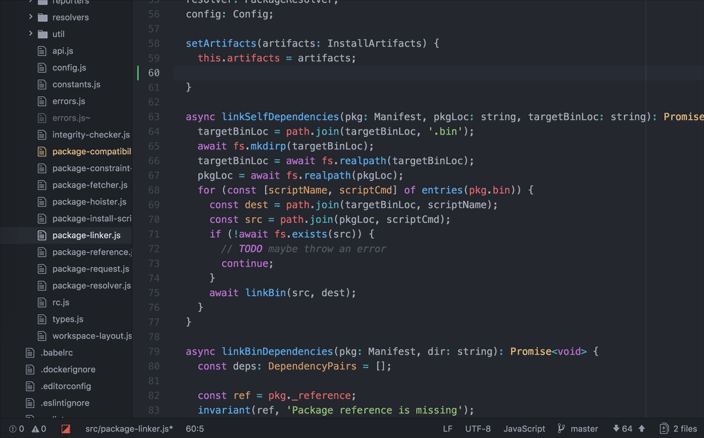

Visual Studio
Microsoft Visual Studio es un entorno de desarrollo integrado (IDE, por sus siglas en inglés) para sistemas operativos Windows. Soporta múltiples lenguajes de programación, tales como C++, C#, Visual Basic .NET, F#, Java, Python, Ruby y PHP, al igual que entornos de desarrollo web, como ASP.NET MVC, Django, etc., a lo cual hay que sumarle las nuevas capacidades online bajo Windows Azure en forma del editor Monaco. Visual Studio permite a los desarrolladores crear sitios y aplicaciones web, así como servicios web en cualquier entorno que soporte la plataforma .NET (a partir de la versión .NET 2002). Así, se pueden crear aplicaciones que se comuniquen entre estaciones de trabajo, páginas web, dispositivos móviles, dispositivos embebidos y consolas, entre otros.
Atom
Para el desarrollador web, una de sus herramientas más importantes es su editor de texto o entorno de desarrollo integrado (IDE por sus siglas en inglés). Hoy os presentamos Atom, uno de los IDE de más éxito del momento. Atom es compatible con todos estos lenguajes: HTML, CSS, Less, Sass, GitHub, C/C++, C#, Va, Java, Objetivo-C, Javascript, JSON, CoffeeScript, Python, PHP, Ruby, Shell Script, Clojure, Perl, Git, Property List(Apple), TOML, XML, YAML, Mustache, Julia y SQL.

NetBeans es un entorno de desarrollo integrado libre, principalmente utilizado para la programación Java, aunque existe una gran cantidad de módulos para extenderlo. NetBeans IDE es un producto libre y gratuito, sin restricciones de uso. Sun MicroSystems fundó el proyecto de código abierto NetBeans en junio del año 2000 y, continúa siendo el patrocinador principal de los proyectos. Para instalarlo, podéis ir a la página de descargas de NetBeans, seleccionáis el idioma y la plataforma y listo.
Descargar Netbeans + Java JDK